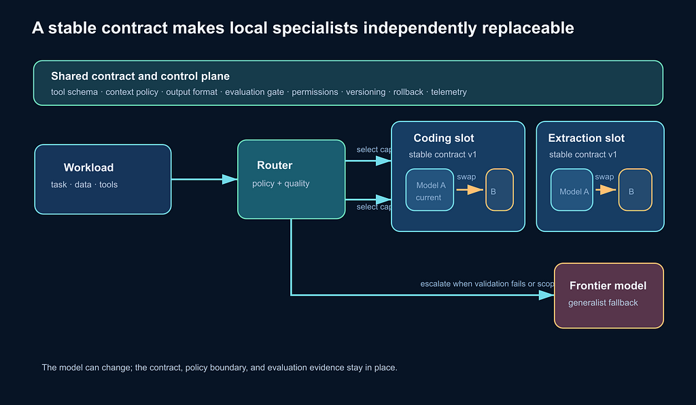

Why local specialist models need routers, contracts, observability, and escalation — not just smaller parameter counts.
The default mental model for AI is becoming oddly monolithic.
We ask one model to be a programmer, product manager, architect, planner, writer, researcher, analyst, and sometimes a pair of eyes. We give it every modality we can, an ever-larger context window, and access to an expanding shelf of tools. Then we send almost every request to it, whether the task is a hard design problem or a routine code edit.
This is understandable. Frontier models are remarkable because they are broad. But breadth has become an architectural default before we have asked if it’s the right default.
I have seen the same pattern in traditional Software development before. Software bundles begin integrated because it’s simpler to distribute. As workloads, orgs, and hardware economics change, we break the monolith bundle into smaller units with clearer responsibilities as micro services. Later, some of that complexity may recentralize behind platforms and control planes if we splitted them to too granularly.
I see the same pattern coming for AI model or ecosystem, though the AI equivalent will not be “replace every large model with tiny ones.” It will be a hybrid architecture: specialized models handling bounded work locally in private deployments, with a smart routing layer escalating the hard, ambiguous, or broad tasks to frontier generalists. That’s not only more economic, but also unlock the potential for evolve independently in each specialized area.
This is more a system architect/design shift, than model size.
Why decomposition won — when it did
Microservices did not win because smaller services are intrinsically elegant. They won in situations where focused complexity resolution, independent deployment, team ownership, fault isolation, and targeted scaling outweighed the cost of distribution.
The cost matters. Microservices can impose real burdens: network failures, harder debugging, distributed data consistency, more deployment machinery, and a tendency to create a tangle of services that must change together. As Martin Fowler put it, the architecture has both benefits and costs; independent deployment only counts when services can actually evolve without coordinated releases. Microservice Trade-Offs
Still, decomposition unlocked options that a single application could not easily provide. A team could deploy one capability without redeploying the whole system. A hot path could scale independently. Different components could use different technologies. A failure could degrade one function rather than take down the entire product.
Commodity infrastructure made the economics work. Once reliable building blocks, automation, and orchestration became available, it was often better to compose many ordinary machines than depend on one highly specialized system.
AI is approaching a related inflection point. The question is not whether a 35b model is “small” in an absolute sense. It is a slew of such specialized models, running on commidity hardware, can collectively to provide cheap enough, private enough, and operationally manageable enough to outpace the cost of a monolith broad model/system.
My local vibe coding experience
My own shift came from running Ornith 1.0 35B (Ornith 1.0)locally for vibe coding, to subside the cost from frontier provider like OpenAI and Claude, for example a simple “heloo” can cost 2% of your weekly limit already.
On my setup — 64 GB of system memory and a GPU with 32 GB of VRAM running Ubuntu 26.04 server — I observed ~200 token/s in Claude Code CLI with comparable code quality vs frontier models. I run it through LM Studio using a Q4_K_M quantization, with all layers loaded into GPU VRAM. Please node this is not an official a benchmark or performance claim, i have made other optimization such as the temperature, KV cache quantization etc
This is enough to change the architectural question. If a local coding specialist is capable enough for my long iterative agentic sessions, keep proprietary code close to the machine that owns it, and avoid paying frontier-model prices for every routine step nor throttled, then “send everything to the biggest model” stops looking like an inevitable design.
That distinction is important. I am not arguing that one model’s marketing page settles the future of AI. I am arguing that firsthand experience with a capable local specialist makes the future easier to imagine.
Mixture-of-experts is related — but it is not microservices
The obvious counterargument is that the largest models are already decomposing internally. Mixture-of-experts, or MoE, architectures contain multiple expert subnetworks and use a learned gate to activate only some of them for a given input. The original sparsely gated MoE work showed how conditional computation could increase model capacity without proportionally increasing compute for every example. Shazeer et al., “Outrageously Large Neural Networks”
That is a meaningful advance. It can make a model’s computation sparser and more efficient. In that sense, MoE and microservices share a family resemblance: neither insists that every part of a large system must work on every request. But the analogy breaks quickly.
An MoE model is usually still one deployed artifact. It has one provider-defined routing policy, one training pipeline, one release cadence, one security boundary, and one external interface. The user cannot normally replace its coding expert with a locally tuned coding model, inspect its routing decision, define its own quality threshold, or move a sensitive task to private hardware.
Internal sparse routing optimizes a model. External composition gives an organization architectural choice. That difference is the opportunity.
The missing AI control plane
A real specialist-based system would need much more than a menu of models. It would need the equivalent of the infrastructure that made service-oriented systems practical.

Start with boundaries. A coding model should not be defined merely as “the one we use for code.” It needs a contract: supported tasks, context limits, tool protocol, structured output, privacy guarantees, expected latency, known failure modes, and evaluation thresholds. The same is true for document extraction, classification, private search, image analysis, and planning.
Then comes discovery. In microservice systems, clients need a reliable way to find healthy services and compatible versions. Modern service meshes provide service and endpoint discovery and share current health information with clients, like Google Cloud Service Discovery. An AI system needs a similar capability registry: not just a list of model names, but a live answer to “Which model can perform this task under this data policy, latency target, and cost budget?”
Routing must be explicit. A router may consider task type, input modality, data sensitivity, required tools, context length, quality target, latency budget, and historical success. It should be able to try a local specialist first and escalate when deterministic checks fail, an external evaluator detects a problem, sampled human review reveals a gap, or the task falls outside the specialist’s contract. Model self-reported confidence can be one signal, but it should not be the sole judge of correctness.
This is not purely speculative. Research on hybrid LLM routing has found that routing by predicted difficulty can reduce calls to a larger model while retaining response quality on the evaluated workloads. “Hybrid LLM: Cost-Efficient and Quality-Aware Query Routing” That is promising evidence for a hybrid direction — not proof that any particular router will work in every organization.
Observability is equally important. With one generalist endpoint, a bad answer is often just a bad answer. In a composed system, you need to know which model received the task, why the router chose it, which prompt and tools it saw, which model version ran, how long it took, what it cost, whether it was escalated, and whether downstream evaluation accepted it. Distributed systems use logs, metrics, and traces to reconstruct a request’s path and find bottlenecks; AI stacks will need the same discipline. Google Cloud Architecture Framework
Finally, there must be governance. Models need versioning and staged rollout. Tool permissions need least privilege. Sensitive context needs clear residency rules. Teams need a way to retire a specialist that no longer meets its evaluation bar. A router without policy and telemetry is not an architecture. It is a gamble.
The microservices tax will reappear
This future is not free.
Every model boundary can lose context. A planner may understand a user’s goal in a way that a specialist does not. Passing complete context everywhere undermines the cost and privacy benefits; passing too little creates brittle behavior. That’s where your harness (https://openai.com/index/harness-engineering/) comes in to save and why it’s so important, to ensure the necessary context was continued when escalation happens.
Routing can fail. A request that looks routine may contain the one detail that requires broad reasoning. Different models may interpret tool schemas, instructions, or structured-output formats differently. Evaluation is difficult because a model can produce a plausible answer that is subtly wrong. And a fleet of specialists can become an AI-flavored distributed monolith: too many components, too much coordination, and no clear owner of the end-to-end outcome.
This is why the frontier generalist remains essential. Use it where broad knowledge, multimodal synthesis, novel reasoning, high ambiguity, or high consequences justify the cost. Use it as an escalation path when local specialists are uncertain or their outputs fail a check. In some workflows, one powerful model may still be simpler, safer, and better.
The goal is not to ban the monolith. It is to stop making it the answer to every question or default.
Build for hybrid now
The practical first step is modest. Choose one high-volume, bounded workflow — private code assistance, ticket classification, document extraction, internal search, or a structured review task. Define success before choosing a model. Run a specialist locally or in a private environment. Measure quality, latency, throughput, failure modes, and total operating cost. Add a deliberate escalation path to a frontier model.
That experiment will reveal whether the work is truly bounded, whether the specialist is compatible with the surrounding tools, and whether the router is saving money without hiding quality failures.
Model providers should make this easier. The next competitive advantage may not come only from training a larger generalist. It may come from building specialists with clear contracts, portable interfaces, reliable evaluation, and router-friendly deployment options. Users should demand those properties instead of treating model selection as a one-time brand choice.
Microservices taught us that decomposition pays only when the seams are real and the operational layer is mature. AI should learn the same lesson.
The future is probably neither one universal model nor a chaotic bazaar of tiny ones. It is a hybrid system: specialists do most routine work on widely available local or private hardware appropriate to the operator, while a frontier generalist handles the cases where generality truly earns its cost.
That is the microservice moment for AI — not smaller models alone, but the architecture that lets them work together.